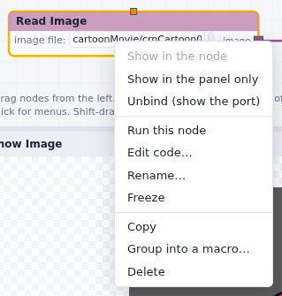
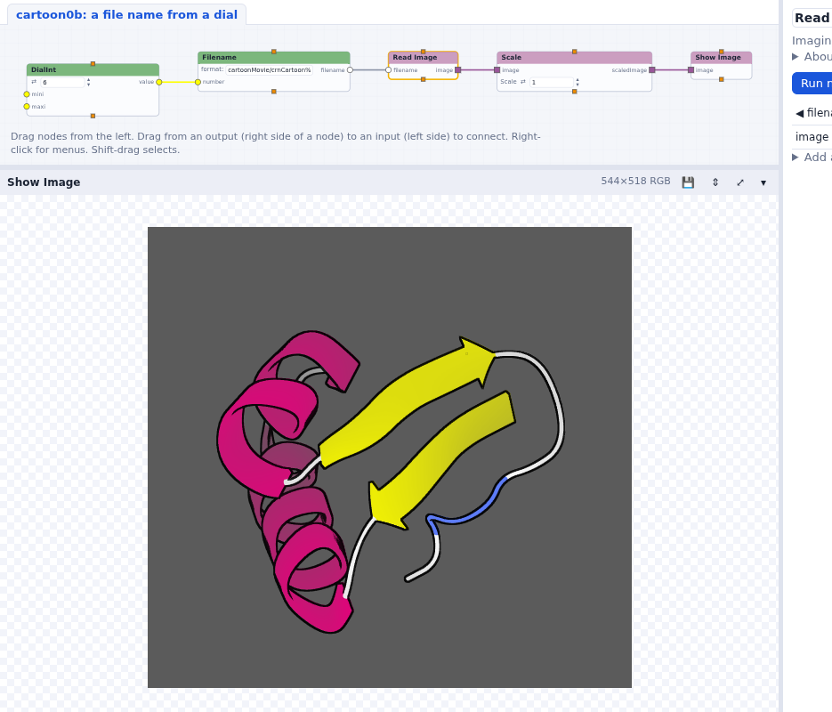
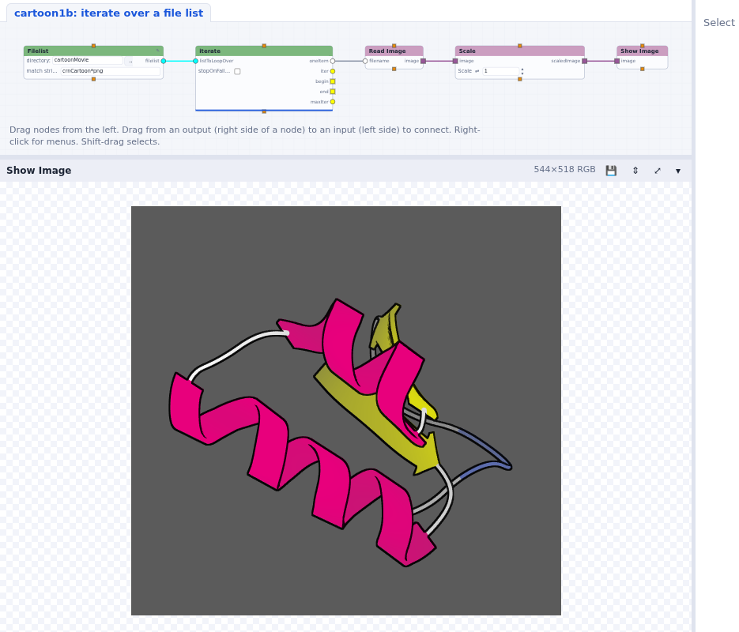

Playing a series of images
Feed an input from another node instead of its widget, make file names from numbers, loop with iterate, and change a node's code.
The folder cartoonMovie holds 101 frames, crnCartoon0000.png to
crnCartoon0100.png. We will turn the image viewer of the
previous tutorial into a movie player. Start from your image viewer,
or open cartoon0: an image viewer.
File names in widgets are relative to the network's folder, so cartoonMovie/...
works wherever the folder is.
A file name from a dial
- Drag a Filename node (Standard > Input). It makes a file name from a number and
a format, with Python's
%formatting: set its format tocartoonMovie/crnCartoon%04d.png(%04d: the number on 4 digits). - Now, how do we bring its output to Read Image, whose file name comes from its widget? Right-click
Read Image's image file widget and choose Unbind (show the port). The widget goes, and
filenamebecomes a port.
- Connect Filename's
filenameoutput to Read Image'sfilename. Filename stops: itsnumberinput is required and has no data yet. - Drag a DialInt (Standard > Input) and connect its
valueto Filename'snumber. Turning the dial now makes a file name, reads the image, scales it and shows it.

cartoonMovie/crnCartoon0006.png.To give the widget back, right-click the filename port and choose Rebind
widget.
Loop with iterate
Rather than turning a dial, let's play the frames one after the other.
- Delete the DialInt. Drag an iterate node (Standard > Python) and connect its
oneItemoutput to Filename'snumber. - iterate needs a list to loop over: drag a range node (Standard > Python), set it
from 0 to 99 by 1, and connect its
datato iterate'slistToLoopOver. - Press Run. iterate sends the numbers one at a time, and runs the nodes below it for each one: the movie plays in the Show Image panel. Stop stops it after the current frame.

A widget can be in the node, or only in the parameter column: right-click range's step widget and choose Show in the panel only. Uncheck run on change while you set several widgets, so the movie does not start each time.
A list of files
Instead of making file names from numbers, we can list the files.
- Delete range and Filename. Drag a Filelist node (Standard > Input), set its
directory to
cartoonMovieand its match string tocrnCartoon*.png(orcrnCartoon????.png; the wildcards are the shell's). - Connect its
filelistto iterate'slistToLoopOver, and iterate'soneItemstraight to Read Image'sfilename. - Run. The frames may play out of order: the files come in the order the folder lists them. The
list is a Python list, which has a
sortmethod: insert a call method node (Standard > Python) between Filelist and iterate and typesortin its signature.
Don't we have a way to change the Python code instead? Delete the call method node, double-click
Filelist to open its code, and add values.sort() after the line that makes the list:
try:
values = glob.glob(match_str)
values.sort()
filenames = [ os.path.join(directory, x) for x in values ]
self.outputData(filelist=filenames)
Press Save and run. Save the network (File > Save), close it and open it again: the changed code is saved with the network, as every change made to a node is.

Exercise: play it backwards
Add an input port named reverse to the Filelist node, with a check button widget.
When it is checked, the list is reversed and the movie plays backwards.
- Select Filelist; in the parameter column open Add a port: input, name
reverse, type boolean, and check widget. Press Add port. - The compute function gets a
reverseargument. Edit the code:values.sort() if reverse: values.reverse()